Prototipação de Alta Fidadelidade
Prototipação de Alta Fidelidade
Esta seção apresenta os protótipos de alta fidelidade do projeto Ibvagas, representando a interface final da aplicação com design, cores, tipografia e layout definidos. Eles oferecem uma visão clara da experiência do usuário e da identidade da plataforma.
1. Tela de Login
Esta é a porta de entrada para a plataforma. O design prioriza a simplicidade e a eficiência, permitindo que os usuários façam login com suas credenciais ou por meio de provedores de autenticação social, como Facebook, Google e Apple.
- Propósito: Autenticar o usuário e direcioná-lo para a área correta (aluno, professor ou coordenador).
- Elementos Chave:
- Campos de entrada para e-mail/telefone e senha.
- Botões para login social, alinhando-se com a sugestão de "Login com Google" discutida no brainstorming.
- Opção de "Criar nova conta" para usuários que ainda não têm um cadastro.
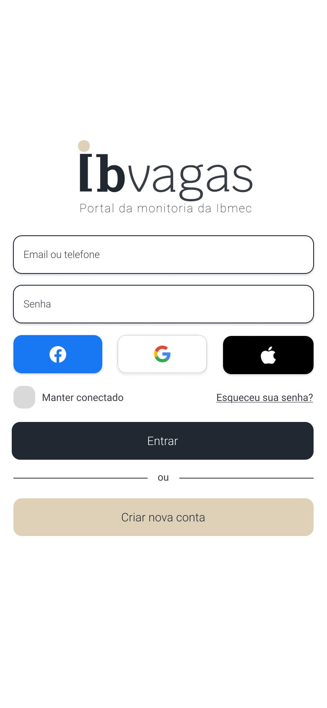
2. Tela de Cadastro
O formulário de cadastro foi projetado para ser intuitivo, solicitando apenas as informações essenciais para a criação de uma conta de aluno. O objetivo é reduzir o atrito e simplificar o processo de adesão à plataforma.
- Propósito: Permitir que novos alunos criem suas contas na plataforma.
- Elementos Chave:
- Campos para Nome e Sobrenome, Matrícula, E-mail e Senha.
- Chamada clara para ação: "Cadastrar".
- Link para a página de login para usuários que já possuem uma conta.
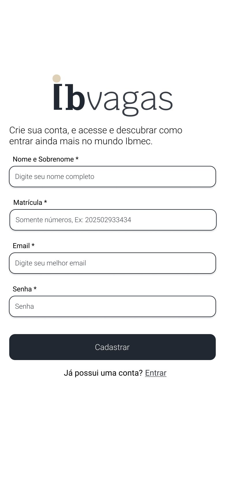
3. Redefinição de Senha
Esta tela faz parte do fluxo de recuperação de acesso. O usuário pode solicitar um link de redefinição de senha, que será enviado para o e-mail cadastrado, garantindo a segurança de sua conta.
- Propósito: Oferecer um caminho seguro para a recuperação de senha.
- Elementos Chave:
- Campo para inserir o e-mail do usuário.
- Botão "Enviar link de recuperação".
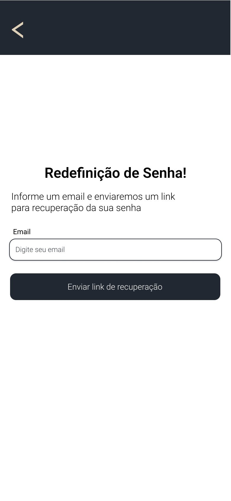
4. Feed de Vagas (Aluno)
Esta é a página principal para o usuário aluno. Ela funciona como um feed, exibindo todas as vagas de monitoria abertas de forma clara e organizada. O design em cards facilita a visualização e a interação com cada oportunidade.
- Propósito: Apresentar de forma centralizada todas as vagas de monitoria disponíveis para o aluno.
- Elementos Chave:
- Lista de cards expansíveis, cada um contendo o título da vaga, o nome do professor, uma breve descrição e os requisitos/responsabilidades.
- Botão "Quero me candidatar!" em cada card, agilizando o processo de inscrição.
- Opção de navegação para "Minhas candidaturas" no cabeçalho.
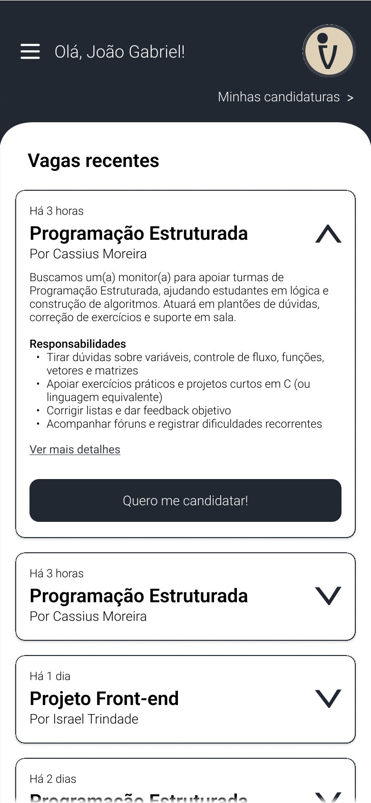
5. Dashboard (Professor)
Este é o painel de controle do professor. Diferente do feed do aluno, ele lista apenas as vagas criadas pelo próprio professor, oferecendo ferramentas para gerenciá-las.
- Propósito: Fornecer uma área para o professor gerenciar as vagas de monitoria que ele criou.
- Elementos Chave:
- Botão "Criar vaga" no cabeçalho, seguindo o fluxo de criação de vagas.
- Lista de cards, cada um representando uma vaga publicada.
- Botões "Editar" e "Remover" em cada card, permitindo a gestão das vagas em tempo real.
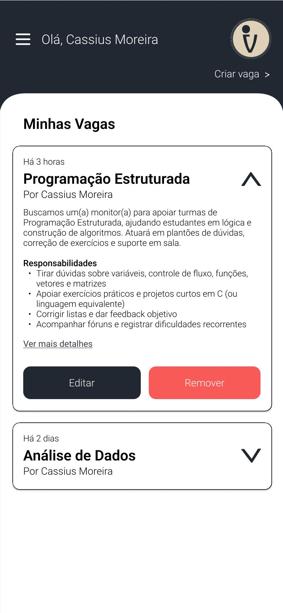
6. Tela de Criação de Vaga
Esta tela é um formulário simples e direto, destinado ao professor que deseja publicar uma nova vaga de monitoria. O layout otimizado permite a rápida inserção das informações essenciais para a oportunidade.
- Propósito: Facilitar a criação e publicação de novas vagas de monitoria por parte dos professores.
- Elementos Chave:
- Campos para selecionar a disciplina, preencher os requisitos e definir as responsabilidades da vaga.
- Botão "Criar vaga" para finalizar e publicar a oportunidade.
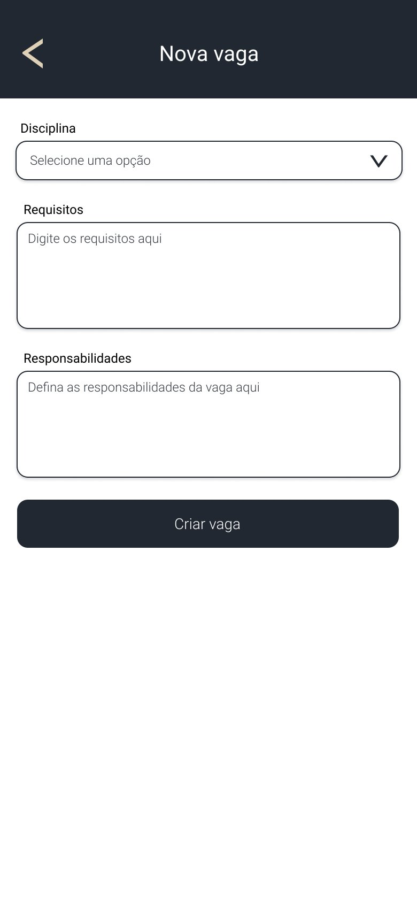
7. Tela de Detalhes da Vaga
Ao clicar em uma vaga no feed, o usuário é direcionado para esta tela, que exibe todas as informações detalhadas da oportunidade, incluindo requisitos e responsabilidades de forma clara.
- Propósito: Oferecer uma visão completa de uma vaga de monitoria específica antes da candidatura.
- Elementos Chave:
- Título da vaga, nome do professor.
- Seções para "Requisitos" e "Responsabilidades" com listas de itens.
- Botão de ação "Quero me candidatar!".
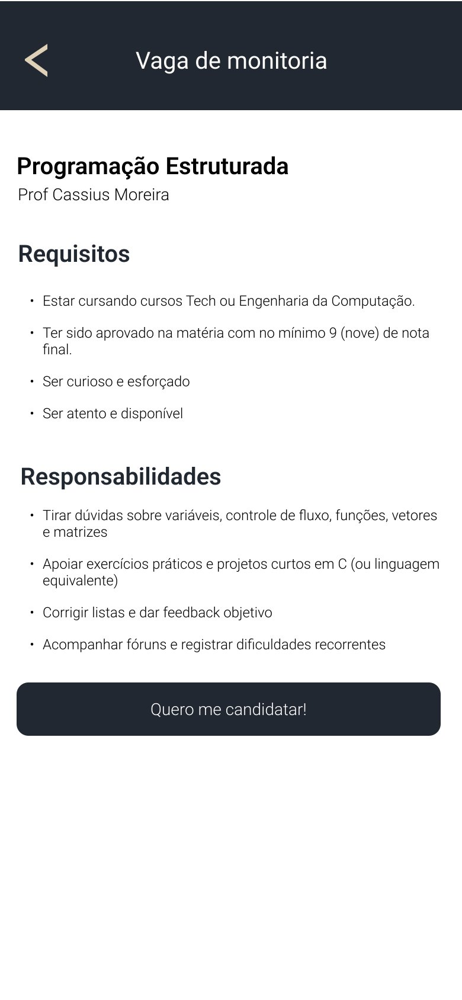
8. Tela de Perfil do Usuário
Esta página permite que o usuário gerencie suas informações pessoais. O layout foi pensado para a clareza, com campos editáveis e opções de segurança, como a alteração de senha.
- Propósito: Oferecer uma área para o usuário visualizar e editar suas informações de perfil.
- Elementos Chave:
- Campos para Nome e Sobrenome, Senha, Celular e um campo para o nome social preferido ("Como você quer ser chamado?").
- Botões de ação para "Confirmar alterações" e "Solicitar e-mail de alteração de senha".
- Opção para "Sair" da conta.
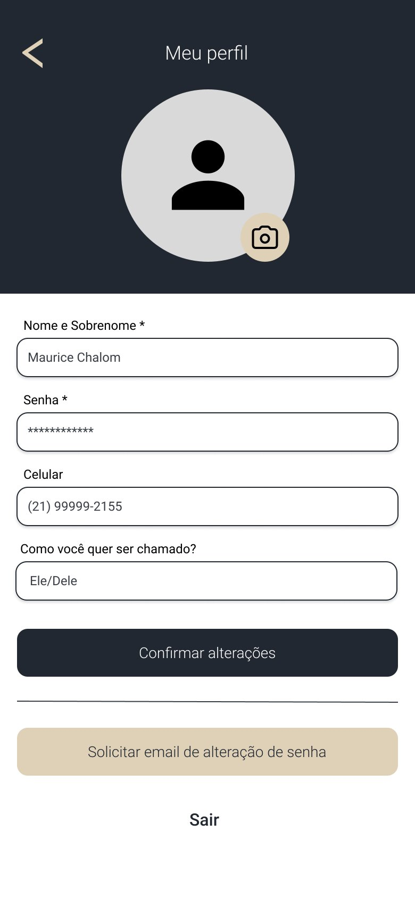
9. Tela de Edição de Vaga
Esta tela fornece ao professor a flexibilidade de atualizar uma vaga já publicada. O design segue a simplicidade da tela de criação, permitindo que alterações nos requisitos e responsabilidades sejam feitas de forma rápida e intuitiva, garantindo que as informações para os candidatos estejam sempre corretas.
- Propósito: Permitir que professores modifiquem os detalhes de uma vaga de monitoria existente sem a necessidade de recriá-la.
- Elementos Chave:
- Seleção da disciplina (provavelmente não editável após a criação).
- Campos de texto para alterar os Requisitos e Responsabilidades.
- Botão de ação claro para "Confirmar alterações".
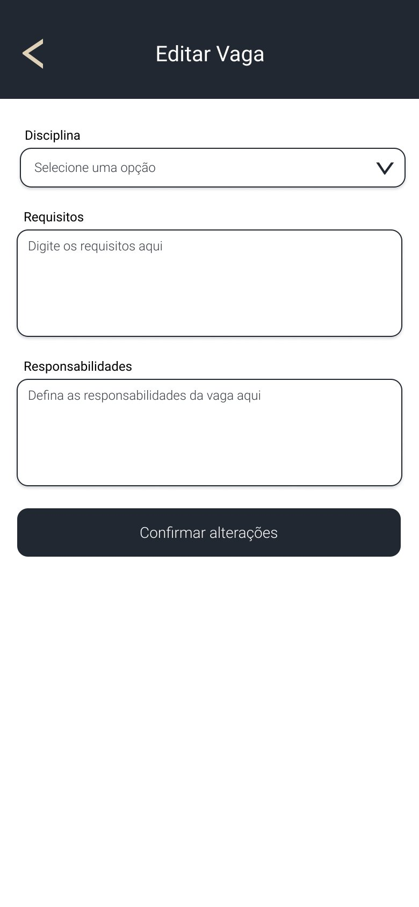
10. Formulário de Candidatura do Aluno
Este é um dos passos mais importantes no fluxo do aluno. Após encontrar uma vaga de interesse e clicar em "Quero me candidatar!", ele é direcionado para este formulário. O layout foi estruturado para diferenciar claramente os dados obrigatórios, exigidos pela instituição, das qualificações adicionais, que servem como um diferencial para a análise do professor.
- Propósito: Coletar de forma organizada todas as informações necessárias para que o aluno possa submeter sua candidatura a uma vaga.
- Elementos Chave:
- Dados Obrigatórios: Campos como Nome, Matrícula, Disciplina (pré-definida pela vaga), Data de Nascimento, Nacionalidade, Curso e Período.
- Qualificações Adicionais: Um campo de texto aberto para que o candidato possa descrever suas motivações e habilidades, conforme idealizado na sessão de brainstorming.
- Design limpo e com espaçamento adequado para facilitar o preenchimento em dispositivos móveis.
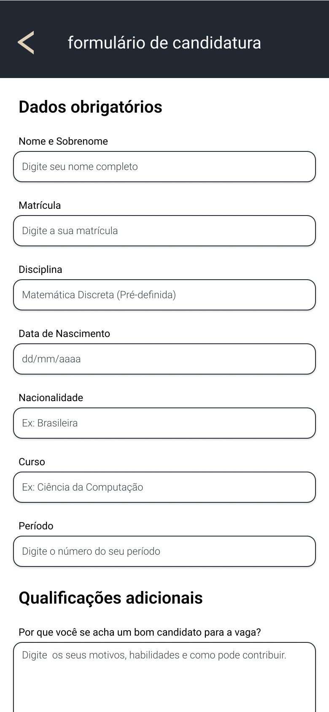
11. Tela de Confirmação de Cadastro
Para garantir uma boa experiência ao novo usuário, esta tela fornece um feedback visual imediato após a conclusão bem-sucedida do cadastro. O design é minimalista, focado em comunicar o sucesso da operação e guiar o usuário para o próximo passo lógico.
- Propósito: Confirmar ao usuário que sua conta foi criada com sucesso e direcioná-lo para o fluxo de login.
- Elementos Chave:
- Mensagem de confirmação clara e positiva: "Parabéns! Cadastro concluído com sucesso".
- Identidade visual da plataforma ("Ibvagas") presente.
- Um único botão de chamada para ação ("Seguir com o login") para evitar qualquer dúvida sobre o que fazer a seguir.
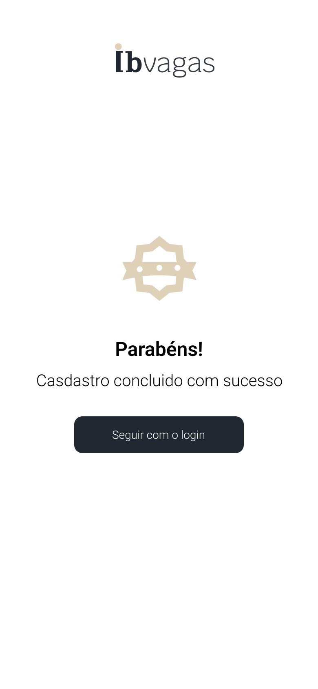